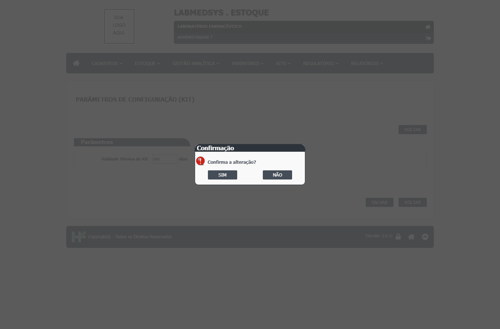

DV-EST-120 · Parâmetros de Configuração (Kit): a validade mínima do kit muda sem justificativa, sem registro de quem mudou e sem o valor anterior, e aceita 99999 dias
A tela guarda o único parâmetro que decide, na Análise do Planejamento, qual lote já está perto demais do vencimento para ir ao cliente. Foi alterada mais de dez vezes na rodada (0, 99999, vazio, `abc`, 60, 100, 150, 200, 500 e de volta a 0) e a cada vez só pediu "Confirma a alteração?" e respondeu "Parâmetros alterados com sucesso!". Não pede justificativa, não tem "Ver log" e não mostra quem mudou nem o valor anterior. O valor 99999 dias foi aceito e voltou como 99999 ao reabrir; campo vazio e texto (`abc`) gravaram 0 sem aviso.
Como reproduzir o erro, passo a passo
- Abrir Kits › Parâmetros de Configuração (Kit).
- Digitar 99999, SALVAR e responder SIM.
- Reabrir a tela: o valor é 99999.
- Procurar justificativa, log ou histórico: não existe.
Esperado
Alteração só com pessoa autorizada, motivo e registro (quem, quando, valor anterior e novo); faixa de valores razoável.
Obtido
Qualquer valor de 0 a 99999 é gravado sem motivo e sem rastro; vazio e texto viram 0.
Evidência (captura da tela)
